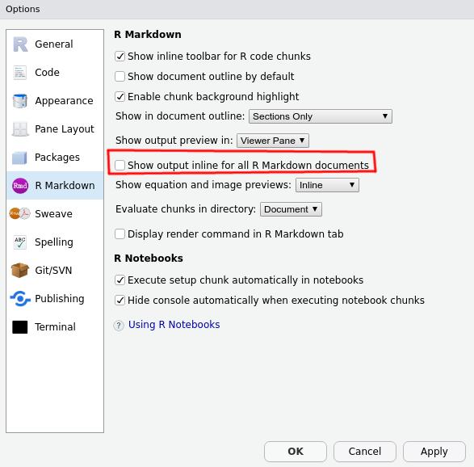

Mars 2023
File > New File > R Markdown...Tools > Global Options tinytex
demo…En-tête YAML : indications données au package rmarkdown (type de document souhaité, options, méta-données…)
Chunks : code dont le résulat sera inséré dans le document final ( knitr)
Markdown : une façon simple d’écrire du texte ( pandoc)
Introduction en
---
title: Créez vos documents avec R Markdown
author: Romain Lesur
date: 21 janvier 2019
output:
ioslides_presentation:
widescreen: true
self_contained: false
logo: "assets/meetuprnantes.jpeg"
keep_md: true
---
Attention à l’indentation
Avec output, vous pouvez produire plusieurs formats à partir du même fichier source :
--- title: Créez vos documents avec R Markdown author: Romain Lesur date: 21 janvier 2019 output: html_document: default pdf_document: default ---
Exécuter dans la console :
rmarkdown::render("monfichier.Rmd", output_format = "all")
Vous pouvez produire :
De nombreux packages fournissent des modèles prêts à l’emploi : rmarkdown, flexdashboard, hrbrthemes, komadown, komaletter, learnr, linl, memor, papaja, pinp, prettydoc, radix, revealjs, rmdformats, rmdshower, rticles, tufte, unilur, vitae, xaringan…
Pour les livres et thèses : bookdown
Pour les sites web : blogdown
Tout un écosystème de packages pour aider :
officer de David Gohel pour MS Officetinytex pour installer facilement \(\LaTeX\)flextable (David Gohel), kableExtra, gt…A partir du même fichier R Markdown, produire des rapports sur différentes zones géographiques, différentes périodes…
--- title: My Document output: html_document params: annee: 2018 region: Europe ---
Disponible depuis le bouton Knit de RStudio ou
rmarkdown::render("monfichier.Rmd", params = list(annee = 2018, region = Europe))
knitr chunksCode chunk
```{r, eval=TRUE, echo=FALSE}
head(mtcars)
```
De nombreuses options ! yihui.name/knitr/options
Inline code
La moyenne est de `r mean(mtcars$cyl)`.
names(knitr::knit_engines$get())
## [1] "awk" "bash" "coffee" "gawk" "groovy" "haskell" ## [7] "lein" "mysql" "node" "octave" "perl" "psql" ## [13] "Rscript" "ruby" "sas" "scala" "sed" "sh" ## [19] "stata" "zsh" "asis" "asy" "block" "block2" ## [25] "bslib" "c" "cat" "cc" "comment" "css" ## [31] "ditaa" "dot" "embed" "exec" "fortran" "fortran95" ## [37] "go" "highlight" "js" "julia" "python" "R" ## [43] "Rcpp" "sass" "scss" "sql" "stan" "targets" ## [49] "tikz" "verbatim" "glue" "glue_sql" "gluesql"
python avec le package reticulateInitialisation de la configuration
```{r, include=FALSE, eval=FALSE}
library(reticulate)
use_python("usr/local/bin/python")
use_virtualenv("r-reticulate")
py_install(c("pandas", "numpy"))
```Script python
```{python, eval=FALSE}
a = 1
print(a)
```
a = 1 print(a)
```{python}
import pandas as pd
import numpy as np
dates = pd.date_range('20130101', periods=6)
df = pd.DataFrame(np.random.randn(6,4), index=dates, columns=list('ABCD'))
```
```{r}
head(py$df, n = 2L)
```
node.js avec un script externeVous voulez écrire un cours sur node.js.
Vos scripts sont dans des fichiers .js.
Vous pouvez écrire :
```{node, code=readLines('node/example.js')}
```
const hi = (name) => {
console.log("Hello " + name + "!");
};
hi("Bob");
Voir le repo source : https://github.com/RLesur/meetup-r-nantes-rmd
SQL avec scripts externesEtape 1 : connexion à la base de données
```{r, include=FALSE}
conn <- DBI::dbConnect(RSQLite::SQLite(), path = ":memory:")
```
```{sql, connection=conn, code=readLines('sql/list_tables.sql')}
```
SELECT name FROM sqlite_master WHERE type='table';
| name |
|---|
| mtcars |
```{sql, connection=conn, code=readLines('sql/data.sql')}
```
SELECT mpg, cyl, disp FROM mtcars
LIMIT 2;
| mpg | cyl | disp |
|---|---|---|
| 21 | 6 | 160 |
| 21 | 6 | 160 |
Se déconnecter :
```{r, echo=FALSE}
DBI::dbDisconnect(conn)
```
Lisez la documentation de Pandoc au moins une fois !
R Markdown Cheat Sheet par RStudio, licence CC BY 4.0
Le package rmarkdown assure la bonne exécution des étapes suivantes :
fichier .Rmd fichier .md = knitr
Exécution des chunks et insertion du résultat
fichier .md fichier .html ou .tex, .docx, .odt… = Pandoc
Pour les pdf avec \(\LaTeX\), étape supplémentaire :
.tex fichier .pdf = \(\LaTeX\)On peut aller très loin dans l’adaptation de R Markdown
Hacker RStudio
Hacker R Markdown
Hacker knitr
Hacker pandoc
Exemple : Hacker le bouton knit de RStudio
Rajouter dans l’en-tête YAML du fichier Rmd une ligne qui renvoie une fonction \(\lambda\) ayant pour arguments (inputFile, encoding)
knit: (function(inputFile, encoding){...})
Si en plus la fonction comprend message("Output created: ", outputFile), le viewer de RStudio l’ouvrira.
On peut créer des nouveaux formats avec rmarkdown::output_format() :
function (knitr, pandoc, keep_md = FALSE, clean_supporting = TRUE,
df_print = NULL, pre_knit = NULL, post_knit = NULL, pre_processor = NULL,
intermediates_generator = NULL, post_processor = NULL, on_exit = NULL,
file_scope = NULL, base_format = NULL)
knitr et pandoc : options passées à knitr et pandoc
pre_knit, post_knit, pre_processor, intermediates_generator, post_processor et on_exit : des fonctions appelées à chaque étape de la génération du document
knitrDes dizaines d’options…
Exemple : hooks
`r pi` donne par défaut : 3.1415927.
Mais on voudrait avoir des , à la place des .
Avec le hook suivant, on peut modifier le comportement des inlines codes :
default_hook <- knitr::knit_hooks$get()$inline
knitr::knit_hooks$set(inline = function(x) {
default_text <- default_hook(x)
if (!is.numeric(x))
return(default_text)
gsub("\\.", ",", default_text)
})
Et maintenant `r pi` donne 3,1415927.
pandocLorsque pandoc transforme un document d’un format vers un autre, il passe par une représentation sous forme arbre syntaxique abstrait (qu’on peut sérialiser en JSON, par ex.).
On peut modifier cet AST grâce à des filtres, voir https://pandoc.org/filters.html.
Langages acceptés : tous (!)lua privilégié depuis pandoc 2
Egalement la possibilité de développer son propre sérialiseur : https://pandoc.org/MANUAL.html#custom-writers
Xie, Y., J.J. Allaire et G. Grolemund R Markdown: The Definitive Guide https://bookdown.org/yihui/rmarkdown/
Xie, Y. knitr Elegant, flexible, and fast dynamic report generation with R https://yihui.name/knitr/
En cours de rédaction :
Harper M. et Y. Xie R Markdown Cookbook https://dr-harper.github.io/rmarkdown-cookbook/